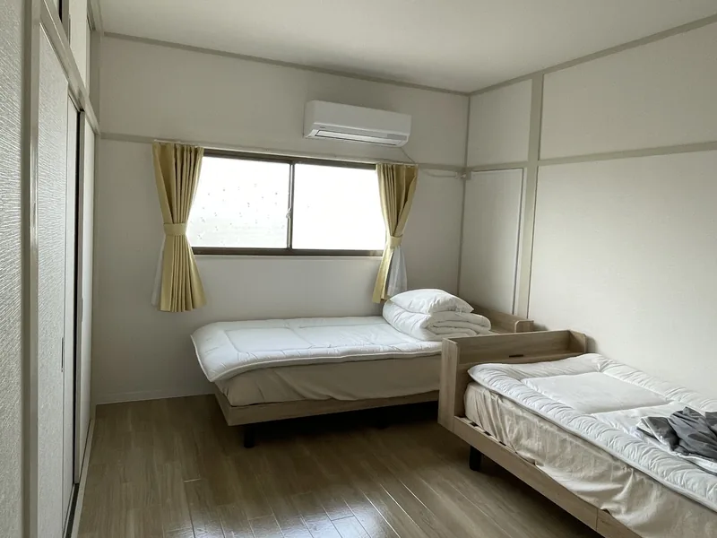
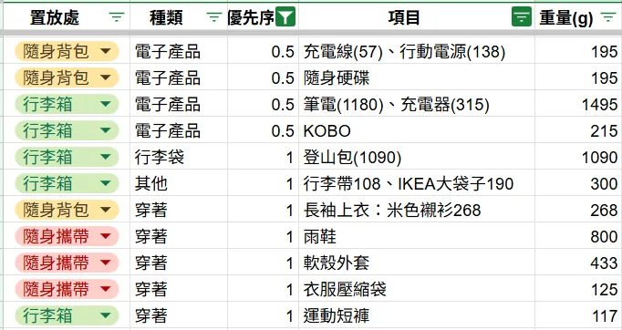
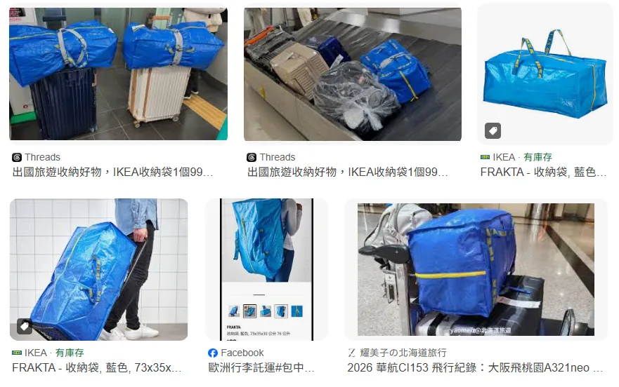
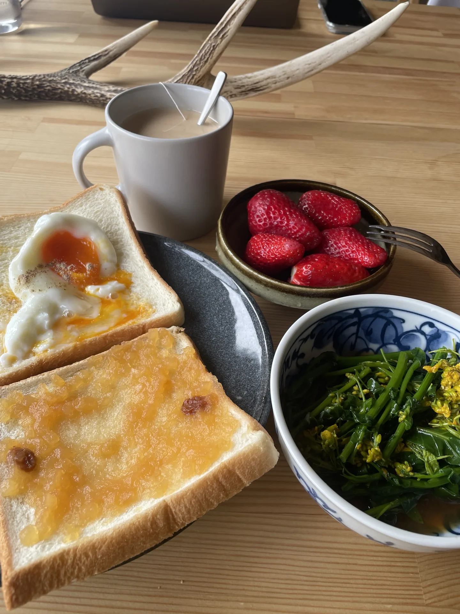
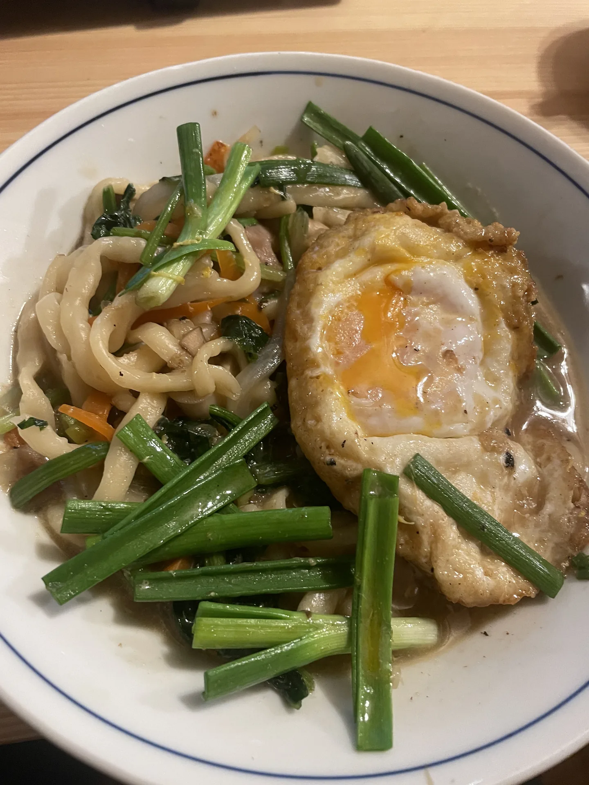

日本打工度假的一年：出發前的準備、支出花費，和不打工的生活方式

2025年6月中到2026年6月中，我在日本打工度假，一整年待好待滿。
出發前，我唯一的心願是趁著打工時接觸滑雪，除此之外，就是看哪裡有什麼做過的事可以體驗，交通距離也不會太誇張遠就去。
相關的準備流程網路上分享心得已經很多，這篇想分享的是實際的支出、工作與玩樂的時間，還有一些經驗分享，提供給還在評估要不要去的人（擔心支出），以及已經決定要去、但不知道從何準備的人。
打工度假，是「度假」還是「打工」？
簽證宗旨是以「度假」為主要目的，並允許透過打工來補足旅費與支援生活。
但至少我看過的大部分到日本打工度假的心得文章，幾乎80~90%的時間都是打工，趁著打工的休假日、兩份打工的空檔或者最後回國前才到處旅遊體驗。
在日本打工也真的只能支付日常開銷而已，存不了什麼錢，以我在雪場旅館工作三個月半（12/20~3/31）的收入為例：
- 打工時薪1300日圓，扣掉稅（20.42%）和國民健保後，以每月工作22天、每天8小時計算，換算月薪約台幣36,000，時薪約205元，跟台灣現行基本時薪196元差不多
- 工作模式為輪班，實際工時因客流量浮動，三個月半打工的薪水分別是台幣8,000、33,000、22,000、16,000。
- 宿舍是免費的謝天謝地，雖然後期時常沒熱水很痛苦。

對我來說，如果沒有錢以外的其他收穫（學滑雪、練日文、交朋友、體驗雪國生活），單純為了賺錢生活、賺旅費，我會覺得不划算，也因此在打工度假的一年間，我真正有收入的打工只有這三個半月。
我也完全明白能夠「覺得不划算」對某些人來說是一種奢侈，也因此我很推薦在台灣時多存一點錢（不用多，就一點），讓自己在日本時有一個月、兩個月的時間能夠嘗試其他的體驗方式，而不只是打工的生活。
而我自己在旅館打工以外的時間，大部分都是藉由「以工換宿」度過，也就是沒有薪水的純勞力換住宿。
實際安排和心得：
- 共換宿 7 次，待 1 個月有 4 次、待 3 週有 1 次、待 1 週有 2 次
- 平均週工時 22 小時，但工作有約 40% 時間比較像在玩/體驗，體感工時約 12 小時/週
我覺得待一個月是很剛好的時間長度，不會彼此還沒變熟就要離開（過程中抱著「反正也很快就要分開了」而不打算深交的心情相處），足夠建立起未來持續保持聯絡的關係。如果和我的有薪打工平均週工時26小時相比，換宿的週工時22小時根本差不多還沒錢賺，或許心態上會覺得很不平衡，我只能說：「賺到的是體驗」。
換宿機會我主要是透過「 HelpX 」這個平台找，優點是年費便宜（約20歐/兩年），缺點是選擇少，適合沒有堅持一定要去哪裡的人；類似平台如全球用戶最多的Workaway，選擇更多但費用也較高。

得知自己有申請成功、開始安排計畫時，我一直反覆問自己：「這趟想得到什麼？」
我的答案是：體驗各種沒體驗過的事物。
我喜歡做菜、嘗試食材，吃了好幾種葡萄、草莓、地瓜品種，和其他人一人一菜共進晚餐、也做台灣料理交流；拜訪日本人家裡甚或是住進去，我覺得從平凡的生活裡，最能看見「真正的日本人」；也和他們聊二戰歷史、聊商業模式、提問「日本人其實沒有喜歡台灣吧」；除了日本人，也跟來自沒去過、甚至沒想過要去的國家的外國朋友交流、旅遊、探索日本。這些是我最大的收穫。
日文不夠好，怎麼辦？
我是在日文能力大概N4或不到N4的程度出發，一年下來，因為語言不夠好而後悔的時刻，其實沒有想像中那麼多。
- 換宿環境對語言的容錯度通常比較高。接待換宿者的主人多半本來就習慣和外國人相處，破日文（加破英文）照樣能溝通。
- 打工就會有較高的語言能力要求，但是日本外籍打工者多、聘用打工度假者也很普遍，因此有不少工作機會是不需要日文能力的，只是工作內容和選擇自然比較有限（比如通常是清潔、備餐、農務等），這就要看自己的接受度。
- 簡單日文跟翻譯軟體能解決大部分生活需求，我大量使用翻譯軟體的時候，是處理行政手續、看醫生時，聊天的時候很偶爾才會用，不是因為都聽得懂，而是透過翻譯軟體來聊天其實滿難聊的、滿卡的。
- 也會遇到不太(能)聊天、但依然善待你的人
這段時間也偶爾有「如果日文再好一點就好了」的時刻，聊天結束回住所後覺得嚥不下這口氣(?)，就會問AI學習怎麼講，這些都是學習進步的動力。經過一年，我的文法大概還是只有N4，但我的字彙量多很多，聽力變得很好、都聽得到（聽得懂是另一回事），口說也變習慣講、就算都用簡單文法講也不會害怕，手寫變得非常非常爛。
總之，對日文沒有自信也不用擔心，到日本之後自然就需要講，再慢慢練習就好。
行李：只帶一個登山包的心法
我的行李是60公升登山包，入冬前有回台灣一趟，才再加一個登機箱；後來遇到的其他人的行李有3-5箱之多，才讓我大開眼界。大概是我在台灣的生活習慣就滿精簡的，所以也沒有特別覺得生活得很不方便。
回頭看，「一包到底」這件事還是完全成立的，整理幾個心法：
- 列攜帶清單、逐一秤重量，能精準掌握重量，需要取捨時也可以直接用清單排序、對照，能夠決定得很快，出發前也能當作檢查表。
- 「背負重量抓體重的1/3以內」是登山友人的建議，我體重約58公斤，體重1/3的話可以背約19公斤，但實際舒適上限大概16公斤，「背著走」沒問題，從椅子或地面背起來時比較辛苦一些。最舒適的的重量約13公斤。
- 消耗品抓2-3個月用量，重點在於讓自己有足夠時間慢慢研究、購買當地產品，但還是取決於移動頻率和個人習慣
- 衣物走洋蔥式穿搭邏輯，差不多的衣服，可以應付從夏天到秋天的溫差。另外推薦羊毛材質可以抗菌除臭，以及各類登山用的機能型衣物，有些重量輕也快乾，也好看！
- 伴手禮可以表達感謝也讓別人認識台灣，很好用。我帶了咖啡豆和台灣茶，飲食類的大家接受度都很高，尤其台灣茶真的是具有在地特色的東西，可以為大家服務泡給大家喝，也可以成為聊天話題。

登山包的好處與使用經驗
選擇登山包或行李箱完全是個人偏好，我是出於喜歡行動自如，需要趕時間的時候可以跑樓梯（？），此外尤其不想拖大行李箱在電車、巴士上影響到別人。
旅程進行到後段、要帶回台灣的東西慢慢增加時，會改用一個輕便的手提行李袋分裝、固定在登機箱上方一起拖行，讓登山包不會過重；搭機託運時，我會在機場用IKEA FRAKTA收納袋（約 76 公升）把登山包裝起來，再把手提行李袋的東西塞好塞滿，這比同公升數的行李箱能裝下更多重量，我回國時託運了18公斤多，其中登山包加IKEA袋加起來占不到1.5公斤。

做飯的傢伙們
大約90%的時間都自己開伙。
裝備上，期間買了一個16公分不鏽鋼雪平鍋（重約400克）隨身帶著，換宿或共用廚房的鍋況常常不太理想，我也介意鐵氟龍不沾鍋。這個尺寸的鍋煮湯麵、炒菜、煎鬆餅都很夠用，缺點是煎荷包蛋比較容易失敗。
我也有帶食物袋（Pockeat ，好日子agooday的產品），外出自備水果或是吃不完的食材可以煮熟帶走很方便。環保餐盒則看環境需求，有些地方的碗盤數量少或不適合占用就可能會需要。
個人推薦雞蛋跟鹽昆布，是和別的食材都能好好相處的百搭神器。學會用微波爐，會讓料理容易很多。另外，勞力工作真的會需要含糖飲料，就算是在台灣完全不喝手搖的人也破功……


有關行政手續的處理與各項建議
在留卡、國民年金、郵局帳戶這類行政事務，建議抵達日本後找一個能停留 2-3 個月的地方，把能辦的都辦一辦，因為很多文件寄送都需要工作天，最長甚至要一個月，如果之後行程變得零碎，會處理得很痛苦。
另外，My Number Card我沒有申請，但別人的經驗分享如果有這張卡，有些行政流程可以直接線上辦理，省去往返市役所或郵寄的時間。如果剛抵達日本、還有時間定點停留，建議一併考慮辦一張，之後不管是加保、報稅還是其他手續，都會方便不少。
至於國民健康保險，我一直到要有薪打工前，被代辦提醒才知道要加保——但我兩次在市役所處理住址登錄時，都是被詢問「有需要加保嗎？」，彷彿這是可以選擇的，事實上加保國民健康保險根本是義務啊！（*如果打工的單位有提供「社會保險」才可以不需要投保。）
如果打算頻繁移動、大部分時間不是有薪打工身分，可以考慮保旅平險，但要注意旅平險上限通常是180天，且不理賠工作意外，這點務必先跟保經確認清楚，是否適合自己的行程規劃。
而我也真的有出險過一次。當時是因蚊蟲叮咬起紅疹去診所看病、因為沒有國民健康保險而全額自費（約4000-5000日圓），後來依保經指示自製診療單請醫生填寫蓋章，回台後申請理賠。
這一趟到底花了多少錢（僅供參考）
實際花費約台幣26.4萬元（僅11個月，不含期間回台灣近一個月的開銷），分類佔比：
- 飲食42%
- 住宿17%
- 娛樂16%（包含伴手禮、門票、泡湯等非必需支出）
- 交通15%
- 生活9%（包含生活必須支出、醫療）
- 保險2%

這個數字完全因人而異，但至少可以當個參考。
- 工作時數（打工加換宿）合計約1010小時
- 過夜旅遊約60天，一日遊至少25次以上
寫在最後
「我有沒有在累積讓自己可以選擇的東西？」好前一陣子之前、陸續在整理這篇文章的資料，當時讀到張國洋這篇臉書貼文的這句話，突然覺得很貼近我在這一年打工度假的安排和選擇。
我已經不是有光陰可以試錯的20多歲年輕人了，這一趟旅行，我知道我得要得到一些除了體驗新事物之外的東西。縱然我一直都不能很清楚說明自己接觸的各種事物、具體正在累積什麼，但是這些收穫，確實在某些奇妙的時刻，成為我和他人對話的契機、加深關係的契機。
我是基於一遍又一遍地體驗這樣的事，因而確信這些學習、這些好奇心，這些無法換成金錢、無法累積成專業的種種知識與經驗，有其意義。
用一句老人言做結尾：很多時候「所有的安排，都是最好的安排」。
留言
電子郵件不會公開，只用來辨識留言者。第一次留言會先經過審核，之後同一個電子郵件的留言會直接顯示。本留言區以 Cloudflare Turnstile 防止垃圾留言。